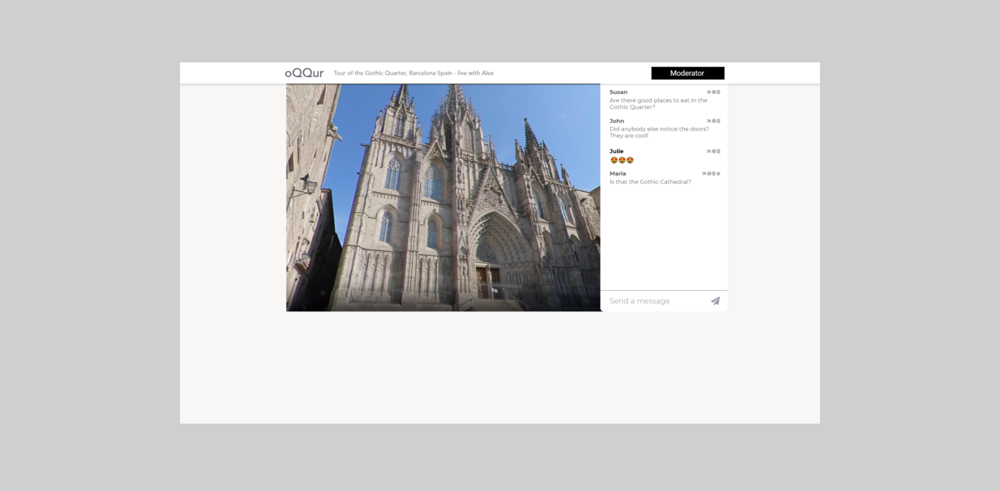

Inventing connections in 360 view
Visit figma. NOTE: This is a live project. I still work with the team to accomplish goals we have set. If you find us catching up there, say hi!
PROBLEM
Oqqur is 360 live streaming platform for virtual tours and educational trips. Behind Oqqur, there is fast-moving team on mission to explore new dimensionality of live video streaming experience
Team reached out to me to help them provide some critical product adjustments that help them validate promising use cases they have identified, onboard early adopters and open doors to seed funding.
Lastly, team asked me to develop visual style that would better communicate their mission, passion and cutting edge technology.
SOLUTION
We identified that the first place to focus on is streaming experience. You can find 360 videos in other platforms such us Youtube or Facebook, but it's not taking off there. We think it's because it's treated as any other video.
But we at Oqqur don't think it's the same. 360 gives you a new reality. You are not limited by viewport of your device and you are no longer looking only on what streamer wants to show you. Experiences in 360 are more authentic and are different from what we know. How do they look? That's what we want to explore.
Image about shows how a page for streams looked when I joined the team. Here are some of the problems and actions I took:
USER FLOWS
I asked the team to help me draw user flows for key actors on platform to help us better understand and modify user experience and provide clear points for reference
LIMITLESS VIEW
Feeling unlimited and free to watch anywhere in the video was something what makes team proud. But this wasn't conveyed from design. Any design decision I made, I questioned it if it helps achieve this
BONDING
Feeling unlimited and free to watch anywhere in the video was something what makes team proud. But this wasn't conveyed from design. Any design decision I made, I questioned it if it helps achieve this
UI CHANGES
Minor changes to implement, but making a difference for user
LIVE BADGE -
DARK THEME - dressing everything into dark. When visuals play the main role, they pop more from dark
After developing initial contexts I formed the following opinions
viewers need to feel they are experiencing the tour with their peers and they need to see who else is there. Video feeds of joiners may be a way, but also not. Mockup is inspired by face grids from video meetings apps - not in sense of showing video, but giving a spot to each joiner. Somewhat like physically taking a person to the spot. Opposed to showing a list of people who are online, this concept can unlock possibilities for interaction between guides and joiners We can build various gadgets like asking questions, reactions, comments - all these things dont have to be in scrollable panel on side. How would it looked like if these responses were associated directly with people who produce them like in offline world?